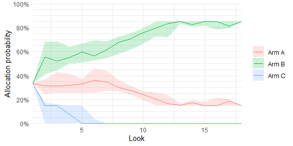

The adaptr package simulates adaptive (multi-arm, multi-stage) clinical trials using adaptive stopping, adaptive arm dropping and/or response-adaptive randomisation.
The package has been developed as part of the INCEPT (Intensive Care Platform Trial) project, which is primarily supported by a grant from Sygeforsikringen “danmark”.
Resources
- Website - stand-alone website with full package documentation
- adaptr: an R package for simulating and comparing adaptive clinical trials - article in the Journal of Open Source Software describing the package
- An overview of methodological considerations regarding adaptive stopping, arm dropping and randomisation in clinical trials - article in Journal of Clinical Epidemiology describing key methodological considerations in adaptive trials with description of the workflow and a simulation-based example using the package
Installation
The easiest way is to install from CRAN directly:
install.packages("adaptr")Alternatively, you can install the development version from GitHub - this requires the remotes-package installed. The development version may contain additional features not yet available in the CRAN version (including preliminary functions), but may not be stable or fully documented:
# install.packages("remotes")
remotes::install_github("INCEPTdk/adaptr@dev")Example
The basic functionality of adaptr is illustrated below.
First, load the library and setup a trial specification using the general setup_trial() function, or one of the special case functions, setup_trial_binom() (used in the example) or setup_trial_norm().
library(adaptr)
#> Loading 'adaptr' package v1.3.0.
#> For instructions, type 'help("adaptr")'
#> or see https://inceptdk.github.io/adaptr/.
# Setup a trial using a binary, binomially distributed, undesirable outcome
binom_trial <- setup_trial_binom(
arms = c("Arm A", "Arm B", "Arm C"),
true_ys = c(0.25, 0.20, 0.30),
min_probs = rep(0.15, 3), # Minimum allocation of 15% in all arms
data_looks = seq(from = 300, to = 2000, by = 100),
# Stop for equivalence at > 90% probability of differences < 5 %-points
equivalence_prob = 0.9,
equivalence_diff = 0.05,
soften_power = 0.5 # Soften allocation ratios
)
# Print trial specification
print(binom_trial, prob_digits = 3)
#> Trial specification: generic binomially distributed outcome trial
#> * Undesirable outcome
#> * No common control arm
#> * Best arm: Arm B
#>
#> Arms, true outcomes, starting allocation probabilities
#> and allocation probability limits:
#> arms true_ys start_probs fixed_probs min_probs max_probs
#> Arm A 0.25 0.333 NA 0.15 NA
#> Arm B 0.20 0.333 NA 0.15 NA
#> Arm C 0.30 0.333 NA 0.15 NA
#>
#> Maximum sample size: 2000
#> Maximum number of data looks: 18
#> Planned data looks after: 300, 400, 500, 600, 700, 800, 900, 1000, 1100, 1200, 1300, 1400, 1500, 1600, 1700, 1800, 1900, 2000 patients have reached follow-up
#> Number of patients randomised at each look: 300, 400, 500, 600, 700, 800, 900, 1000, 1100, 1200, 1300, 1400, 1500, 1600, 1700, 1800, 1900, 2000
#>
#> Superiority threshold: 0.99 (all analyses)
#> Inferiority threshold: 0.01 (all analyses)
#> Equivalence threshold: 0.9 (all analyses) (no common control)
#> Absolute equivalence difference: 0.05
#> No futility threshold (not relevant - no common control)
#> Soften power for all analyses: 0.5The resulting trial specification may be calibrated to obtain a specific value for a certain performance metric (e.g., the Bayesian type 1 error rate for trial specifications with no between-arm differences) by using the calibrate_trial() function.
Simulate a single trial using a reproducible random seed:
trial_res <- run_trial(binom_trial, seed = 12345)
print(trial_res, digits = 3)
#> Single simulation result: generic binomially distributed outcome trial
#> * Undesirable outcome
#> * No common control arm
#>
#> Final status: inconclusive, stopped at final allowed adaptive analysis
#> Final/maximum allowed sample sizes: 2000/2000 (100.0%)
#> Available outcome data at last adaptive analysis: 2000/2000 (100.0%)
#>
#> Trial results overview:
#> arms true_ys final_status status_look status_probs final_alloc
#> Arm A 0.25 active NA NA 0.194
#> Arm B 0.20 active NA NA 0.656
#> Arm C 0.30 inferior 2000 0.007 0.150
#>
#> Esimates from final analysis (all patients):
#> arms sum_ys_all ns_all raw_ests_all post_ests_all post_errs_all lo_cri_all
#> Arm A 180 742 0.243 0.243 0.0161 0.213
#> Arm B 178 841 0.212 0.212 0.0141 0.185
#> Arm C 113 417 0.271 0.272 0.0221 0.230
#> hi_cri_all
#> 0.274
#> 0.240
#> 0.316
#>
#> Estimates from last adaptive analysis including each arm:
#> arms sum_ys ns raw_ests post_ests post_errs lo_cri hi_cri
#> Arm A 180 742 0.243 0.243 0.0159 0.213 0.275
#> Arm B 178 841 0.212 0.212 0.0141 0.185 0.241
#> Arm C 113 417 0.271 0.271 0.0215 0.230 0.316
#>
#> Simulation details:
#> * Random seed: 12345
#> * Credible interval width: 95%
#> * Number of posterior draws: 5000
#> * Posterior estimation method: medians with MAD-SDsSimulate multiple trials using a reproducible random seed:
# Simulate multiple trials - only 10 simulations for speed in the example
trial_res_mult <- run_trials(binom_trial, n_rep = 10, base_seed = 67890)
# Extract results in a tidy data.frame (1 simulation per row)
# See function documentation for details, including on arm selection in trials
# not ending with a superior arm
extr_res <- extract_results(trial_res_mult)
head(extr_res)
#> sim final_n sum_ys ratio_ys final_status superior_arm selected_arm
#> 1 1 1400 332 0.2371429 superiority Arm B Arm B
#> 2 2 900 196 0.2177778 equivalence <NA> <NA>
#> 3 3 2000 441 0.2205000 max <NA> <NA>
#> 4 4 1300 274 0.2107692 superiority Arm B Arm B
#> 5 5 1400 354 0.2528571 equivalence <NA> <NA>
#> 6 6 1700 373 0.2194118 superiority Arm B Arm B
#> sq_err sq_err_te
#> 1 8.118136e-06 NA
#> 2 NA NA
#> 3 NA NA
#> 4 3.801078e-04 NA
#> 5 NA NA
#> 6 3.871855e-05 NA
# Summarise trial results
# See function documentation for details, including on arm selection in trials
# not ending with a superior arm
res_sum <- summary(trial_res_mult)
print(res_sum, digits = 1)
#> Multiple simulation results: generic binomially distributed outcome trial
#> * Undesirable outcome
#> * Number of simulations: 10
#> * Number of simulations summarised: 10 (all trials)
#> * No common control arm
#> * Selection strategy: no selection if no superior arm
#> * Treatment effect compared to: no comparison
#>
#> Performance metrics (using posterior estimates from last adaptive analysis):
#> * Sample sizes: mean 1350.0 (SD: 445.3) | median 1350.0 (IQR: 1025.0 to 1625.0) [range: 700.0 to 2000.0]
#> * Total summarised outcomes: mean 305.3 (SD: 103.8) | median 303.0 (IQR: 231.0 to 368.2) [range: 156.0 to 463.0]
#> * Total summarised outcome rates: mean 0.226 (SD: 0.013) | median 0.222 (IQR: 0.218 to 0.231) [range: 0.211 to 0.253]
#> * Conclusive: 80.0%
#> * Superiority: 40.0%
#> * Equivalence: 40.0%
#> * Futility: 0.0% [not assessed]
#> * Inconclusive at max sample size: 20.0%
#> * Selection probabilities: Arm A: 0.0% | Arm B: 40.0% | Arm C: 0.0% | None: 60.0%
#> * RMSE: 0.01675
#> * RMSE treatment effect: not estimated
#> * Ideal design percentage: 100.0%
#>
#> Simulation details:
#> * Simulation time: 0.447 secs
#> * Base random seed: 67890
#> * Credible interval width: 95%
#> * Number of posterior draws: 5000
#> * Estimation method: posterior medians with MAD-SDsPerformance metrics may also be calculated and returned in a tidy data.frame (with bootstrapped uncertainty measures, if requested) by the check_performance() function, and the empirical cumulative distribution functions of numerical performance metrics may be plotted by the plot_metrics_ecdf() function. Finally, the plot_convergence() function may be used to visually assess stability of performance metrics according to the number of simulations. The check_remaining_arms() function may be used to summarise all combinations of remaining arms across multiple simulations.
Plot trial statuses or history of trial metrics over time:
# Simulate multiple trials - 25 simulations only for speed
# sparse = FALSE is required for plot_history (but not plot_status)
trial_res_mult <- run_trials(binom_trial, n_rep = 25, base_seed = 67890, sparse = FALSE)
# Plot overall trial statuses according to the total number
# of patients randomised
plot_status(trial_res_mult, x_value = "total n")
# Plot allocation probabilities at each adaptive look (requires sparse = FALSE)
plot_history(trial_res_mult)
Plotting statuses for individual trial arms and other summary metrics is possible, too.
Running simulations and extracting and processing results may be done in parallel by either using the setup_cluster() function to set up a cluster of parallel workers that may be used throughout the session, or with new clusters each time parallel computation is done by setting the "mc.cores" global option via options(mc.cores = <number>) or by using the cores argument of many functions in the package.
Issues and enhancements
We use the GitHub issue tracker for all bug/issue reports and proposals for enhancements.
Contributing
We welcome contributions directly to the code to improve performance as well as new functionality. For the latter, please first explain and motivate it in an issue.
Changes to the code base should follow these steps:
- Fork the repository
- Make a branch with an appropriate name in your fork
- Implement changes in your fork, make sure it passes R CMD check (with neither errors, warnings, nor notes) and add a bullet at the top of NEWS.md with a short description of the change, your GitHub handle and the id of the pull request implementing the change (check the
NEWS.mdfile to see the formatting) - Create a pull request into the
devbranch ofadaptr
Citation
If using the package, please consider citing it:
citation(package = "adaptr")
#>
#> To cite package 'adaptr' in publications use:
#>
#> Granholm A, Jensen AKG, Lange T, Kaas-Hansen BS (2022). adaptr: an R
#> package for simulating and comparing adaptive clinical trials.
#> Journal of Open Source Software, 7(72), 4284. URL
#> https://doi.org/10.21105/joss.04284.
#>
#> A BibTeX entry for LaTeX users is
#>
#> @Article{,
#> title = {{adaptr}: an R package for simulating and comparing adaptive clinical trials},
#> author = {Anders Granholm and Aksel Karl Georg Jensen and Theis Lange and Benjamin Skov Kaas-Hansen},
#> journal = {Journal of Open Source Software},
#> year = {2022},
#> volume = {7},
#> number = {72},
#> pages = {4284},
#> url = {https://doi.org/10.21105/joss.04284},
#> doi = {10.21105/joss.04284},
#> }